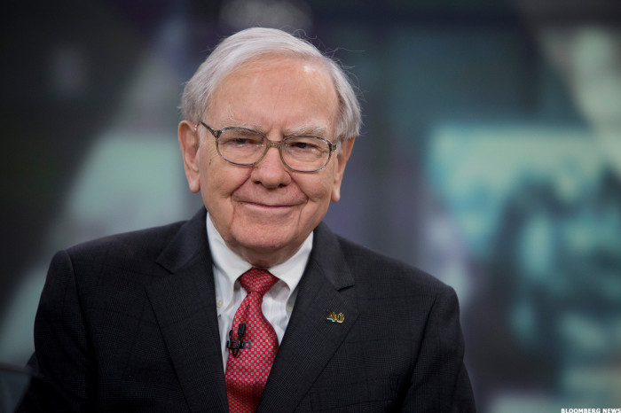

Buffett was born in 1930 in Omaha, Nebraska, the second of three children and the only son of Leila (née Stahl) and Congressman Howard Buffett. He began his education at Rose Hill Elementary School. In 1942, his father was elected to the first of four terms in the United States Congress, and after moving with his family to Washington, D.C., Warren finished elementary school, attended Alice Deal Junior High School and graduated from what was then Woodrow Wilson High School in 1947, where his senior yearbook picture reads: "likes math; a future stockbroker". After finishing high school and finding success with his side entrepreneurial and investment ventures, Buffett wanted to skip college to go directly into business but was overruled by his father.In 1947, Buffett matriculated at the Wharton School of the University of Pennsylvania. He would have preferred to focus on his business ventures, but enrolled due to pressure from his father. Warren studied there for two years and joined the Alpha Sigma Phi fraternity. He then transferred to the University of Nebraska where at 19, he graduated with a Bachelor of Science in business administration. After being rejected by Harvard Business School, Buffett enrolled at Columbia Business School of Columbia University upon learning that Benjamin Graham taught there. He earned a Master of Science in economics from Columbia in 1951. After graduating, Buffett attended the New York Institute of Finance